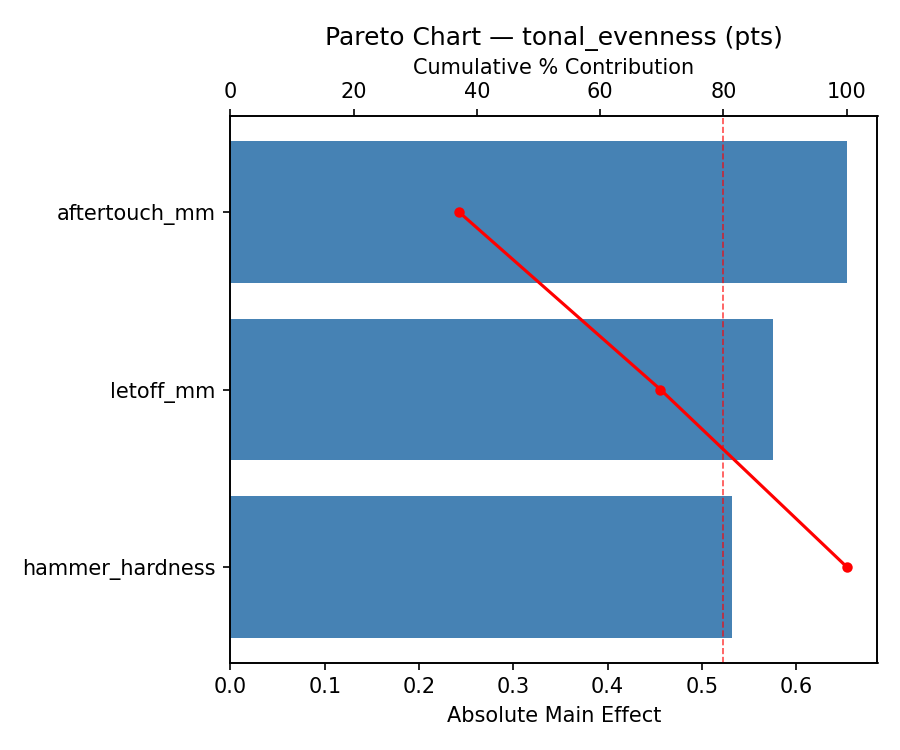
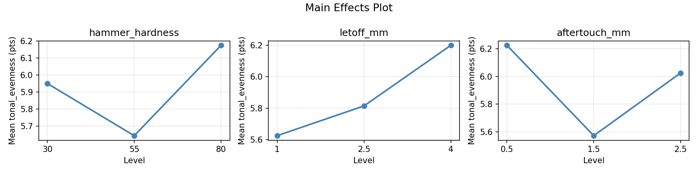
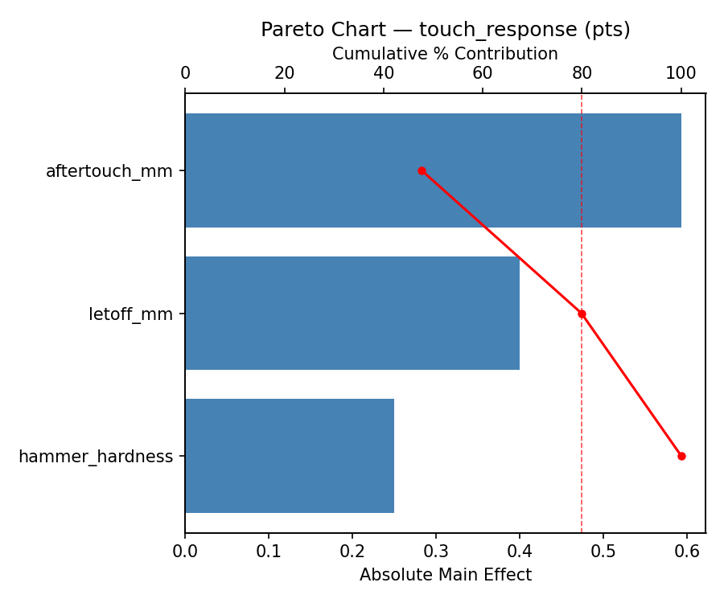
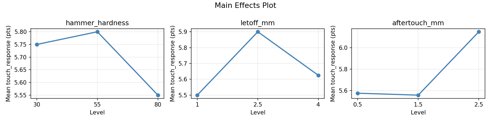
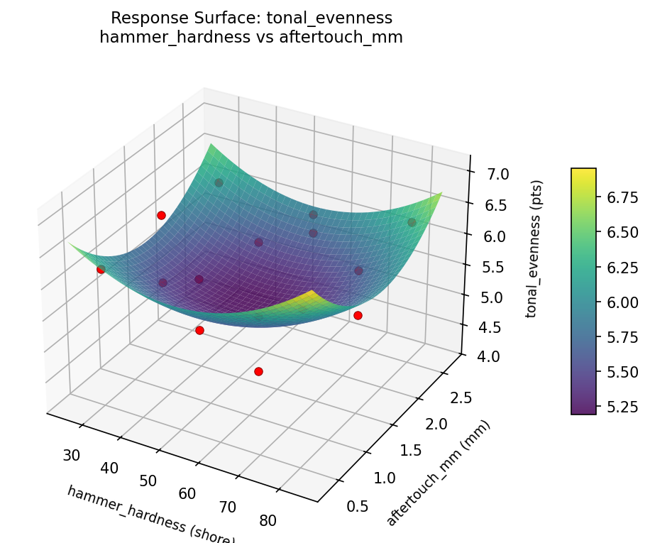
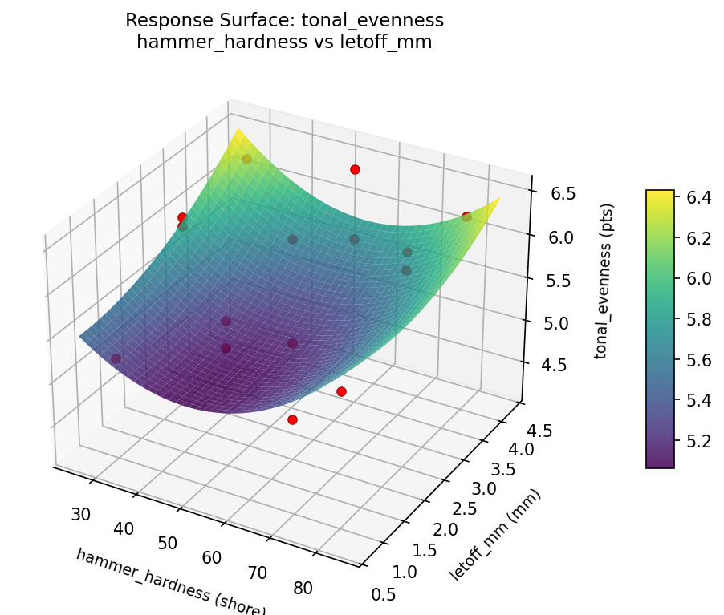
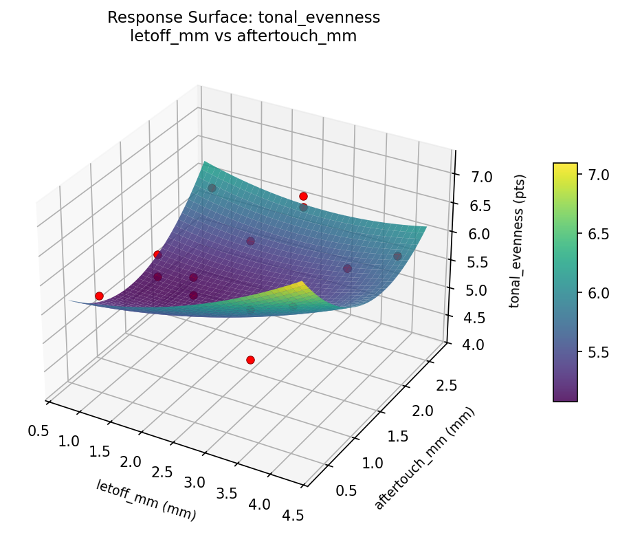
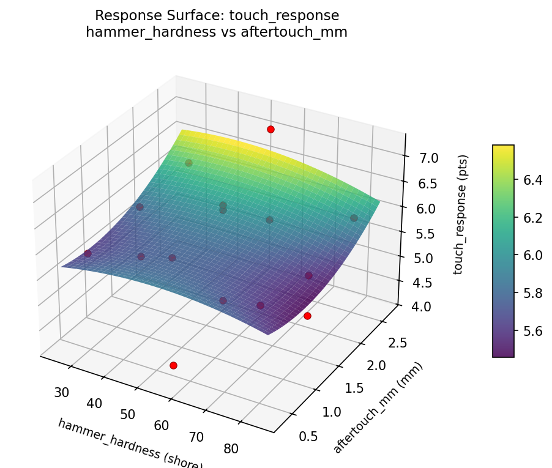
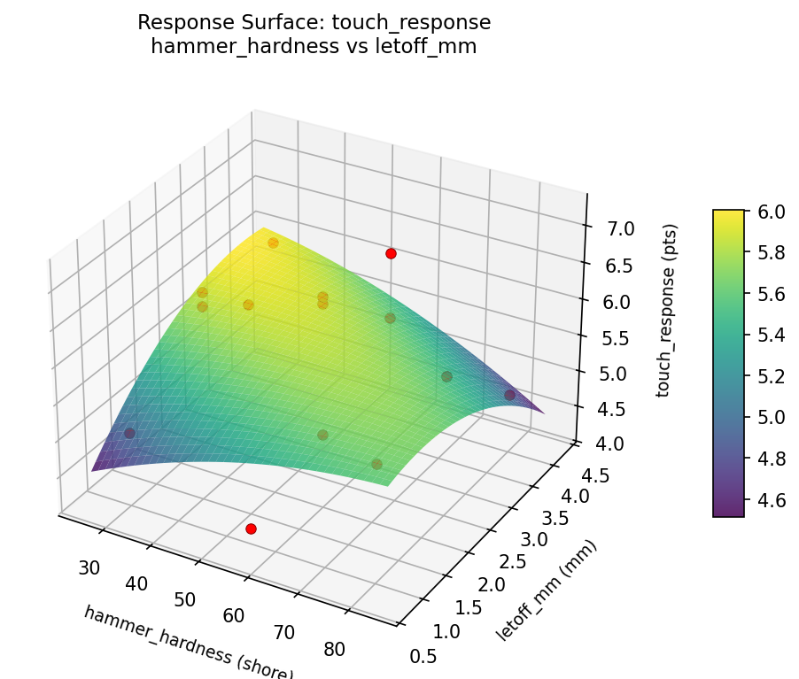
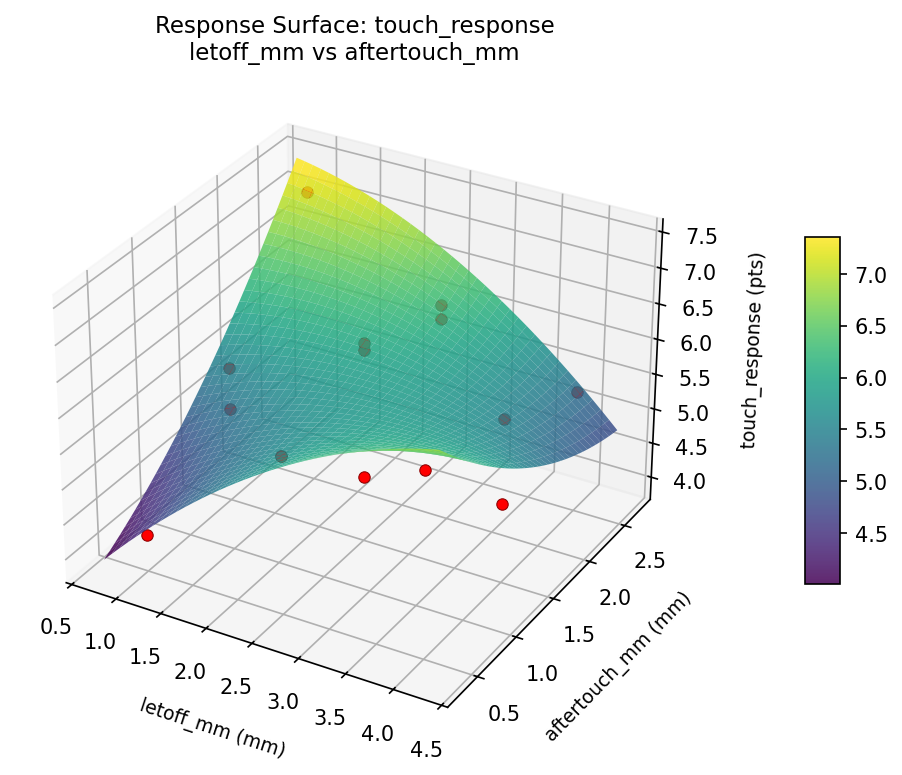

Summary
This experiment investigates piano voicing & regulation. Box-Behnken design to maximize tonal evenness and touch responsiveness by tuning hammer hardness, letoff distance, and aftertouch depth.
The design varies 3 factors: hammer hardness (shore), ranging from 30 to 80, letoff mm (mm), ranging from 1 to 4, and aftertouch mm (mm), ranging from 0.5 to 2.5. The goal is to optimize 2 responses: tonal evenness (pts) (maximize) and touch response (pts) (maximize). Fixed conditions held constant across all runs include piano type = grand, action = repetition.
A Box-Behnken design was chosen because it efficiently fits quadratic models with 3 continuous factors while avoiding extreme corner combinations — requiring only 15 runs instead of the 8 needed for a full factorial at two levels.
Quadratic response surface models were fitted to capture potential curvature and factor interactions. The RSM contour plots below visualize how pairs of factors jointly affect each response.
Key Findings
For tonal evenness, the most influential factors were aftertouch mm (60.9%), letoff mm (21.2%), hammer hardness (18.0%). The best observed value was 6.5 (at hammer hardness = 30, letoff mm = 2.5, aftertouch mm = 2.5).
For touch response, the most influential factors were aftertouch mm (57.5%), letoff mm (22.5%), hammer hardness (20.0%). The best observed value was 7.2 (at hammer hardness = 55, letoff mm = 1, aftertouch mm = 2.5).
Recommended Next Steps
- Run confirmation experiments at the predicted optimal settings to validate the model.
- Consider whether any fixed factors should be varied in a future study.
Experimental Setup
Factors
| Factor | Low | High | Unit |
|---|
hammer_hardness | 30 | 80 | shore |
letoff_mm | 1 | 4 | mm |
aftertouch_mm | 0.5 | 2.5 | mm |
Fixed: piano_type = grand, action = repetition
Responses
| Response | Direction | Unit |
|---|
tonal_evenness | ↑ maximize | pts |
touch_response | ↑ maximize | pts |
Configuration
{
"metadata": {
"name": "Piano Voicing & Regulation",
"description": "Box-Behnken design to maximize tonal evenness and touch responsiveness by tuning hammer hardness, letoff distance, and aftertouch depth"
},
"factors": [
{
"name": "hammer_hardness",
"levels": [
"30",
"80"
],
"type": "continuous",
"unit": "shore"
},
{
"name": "letoff_mm",
"levels": [
"1",
"4"
],
"type": "continuous",
"unit": "mm"
},
{
"name": "aftertouch_mm",
"levels": [
"0.5",
"2.5"
],
"type": "continuous",
"unit": "mm"
}
],
"fixed_factors": {
"piano_type": "grand",
"action": "repetition"
},
"responses": [
{
"name": "tonal_evenness",
"optimize": "maximize",
"unit": "pts"
},
{
"name": "touch_response",
"optimize": "maximize",
"unit": "pts"
}
],
"settings": {
"operation": "box_behnken",
"test_script": "use_cases/163_piano_voicing/sim.sh"
}
}
Experimental Matrix
The Box-Behnken Design produces 15 runs. Each row is one experiment with specific factor settings.
| Run | hammer_hardness | letoff_mm | aftertouch_mm |
|---|
| 1 | 55 | 1 | 0.5 |
| 2 | 55 | 2.5 | 1.5 |
| 3 | 80 | 2.5 | 2.5 |
| 4 | 80 | 2.5 | 0.5 |
| 5 | 55 | 2.5 | 1.5 |
| 6 | 55 | 2.5 | 1.5 |
| 7 | 30 | 2.5 | 2.5 |
| 8 | 80 | 1 | 1.5 |
| 9 | 55 | 1 | 2.5 |
| 10 | 80 | 4 | 1.5 |
| 11 | 30 | 2.5 | 0.5 |
| 12 | 55 | 4 | 2.5 |
| 13 | 30 | 1 | 1.5 |
| 14 | 30 | 4 | 1.5 |
| 15 | 55 | 4 | 0.5 |
Step-by-Step Workflow
1
Preview the design
$ python doe.py info --config use_cases/163_piano_voicing/config.json
2
Generate the runner script
$ python doe.py generate --config use_cases/163_piano_voicing/config.json \
--output use_cases/163_piano_voicing/results/run.sh --seed 42
3
Execute the experiments
$ bash use_cases/163_piano_voicing/results/run.sh
4
Analyze results
$ python doe.py analyze --config use_cases/163_piano_voicing/config.json
5
Get optimization recommendations
$ python doe.py optimize --config use_cases/163_piano_voicing/config.json
6
Multi-objective optimization
With 2 competing responses, use --multi to find the best compromise via Derringer–Suich desirability.
$ python doe.py optimize --config use_cases/163_piano_voicing/config.json --multi
7
Generate the HTML report
$ python doe.py report --config use_cases/163_piano_voicing/config.json \
--output use_cases/163_piano_voicing/results/report.html
Features Exercised
| Feature | Value |
|---|
| Design type | box_behnken |
| Factor types | continuous (all 3) |
| Arg style | double-dash |
| Responses | 2 (tonal_evenness ↑, touch_response ↑) |
| Total runs | 15 |
Analysis Results
Generated from actual experiment runs using the DOE Helper Tool.
Response: tonal_evenness
Top factors: aftertouch_mm (60.9%), letoff_mm (21.2%), hammer_hardness (18.0%).
Pareto Chart

Main Effects Plot

Response: touch_response
Top factors: aftertouch_mm (57.5%), letoff_mm (22.5%), hammer_hardness (20.0%).
Pareto Chart

Main Effects Plot

Response Surface Plots
3D surfaces fitted with quadratic RSM. Red dots are observed data points.
tonal evenness hammer hardness vs aftertouch mm

tonal evenness hammer hardness vs letoff mm

tonal evenness letoff mm vs aftertouch mm

touch response hammer hardness vs aftertouch mm

touch response hammer hardness vs letoff mm

touch response letoff mm vs aftertouch mm

Multi-Objective Optimization
When responses compete, Derringer–Suich desirability finds the best compromise.
Each response is scaled to a 0–1 desirability, then combined via a weighted geometric mean.
Overall Desirability
D = 0.8500
Per-Response Desirability
| Response | Weight | Desirability | Predicted | Dir |
|---|
tonal_evenness |
1.5 |
|
6.00 0.7569 6.00 pts |
↑ |
touch_response |
1.5 |
|
7.20 0.9545 7.20 pts |
↑ |
Recommended Settings
| Factor | Value |
|---|
hammer_hardness | 55 shore |
letoff_mm | 2.5 mm |
aftertouch_mm | 1.5 mm |
Source: from observed run #9
Trade-off Summary
Sacrifice = how much worse than single-objective best.
| Response | Predicted | Best Observed | Sacrifice |
|---|
touch_response | 7.20 | 7.20 | +0.00 |
Top 3 Runs by Desirability
| Run | D | Factor Settings |
|---|
| #12 | 0.8067 | hammer_hardness=80, letoff_mm=2.5, aftertouch_mm=2.5 |
| #2 | 0.7315 | hammer_hardness=55, letoff_mm=1, aftertouch_mm=0.5 |
Model Quality
| Response | R² | Type |
|---|
touch_response | 0.8279 | quadratic |
Full Multi-Objective Output
============================================================
MULTI-OBJECTIVE OPTIMIZATION
Method: Derringer-Suich Desirability Function
============================================================
Overall desirability: D = 0.8500
Response Weight Desirability Predicted Direction
---------------------------------------------------------------------
tonal_evenness 1.5 0.7569 6.00 pts ↑
touch_response 1.5 0.9545 7.20 pts ↑
Recommended settings:
hammer_hardness = 55 shore
letoff_mm = 2.5 mm
aftertouch_mm = 1.5 mm
(from observed run #9)
Trade-off summary:
tonal_evenness: 6.00 (best observed: 6.50, sacrifice: +0.50)
touch_response: 7.20 (best observed: 7.20, sacrifice: +0.00)
Model quality:
tonal_evenness: R² = 0.0110 (linear)
touch_response: R² = 0.8279 (quadratic)
Top 3 observed runs by overall desirability:
1. Run #9 (D=0.8500): hammer_hardness=55, letoff_mm=2.5, aftertouch_mm=1.5
2. Run #12 (D=0.8067): hammer_hardness=80, letoff_mm=2.5, aftertouch_mm=2.5
3. Run #2 (D=0.7315): hammer_hardness=55, letoff_mm=1, aftertouch_mm=0.5
Full Analysis Output
=== Main Effects: tonal_evenness ===
Factor Effect Std Error % Contribution
--------------------------------------------------------------
aftertouch_mm 1.1500 0.1644 60.9%
letoff_mm 0.4000 0.1644 21.2%
hammer_hardness 0.3393 0.1644 18.0%
=== ANOVA Table: tonal_evenness ===
Source DF SS MS F p-value
-----------------------------------------------------------------------------
hammer_hardness 2 0.3173 0.1586 5.288 0.0344
letoff_mm 2 0.4258 0.2129 7.097 0.0169
aftertouch_mm 2 3.8640 1.9320 64.401 0.0000
Lack of Fit 6 1.0062 0.1677 5.590 0.1595
Pure Error 2 0.0600 0.0300
Error 8 1.0662 0.0300
Total 14 5.6733 0.4052
=== Summary Statistics: tonal_evenness ===
hammer_hardness:
Level N Mean Std Min Max
------------------------------------------------------------
30 4 5.6750 1.0404 4.2000 6.5000
55 7 6.0143 0.4598 5.2000 6.5000
80 4 5.8000 0.5292 5.1000 6.3000
letoff_mm:
Level N Mean Std Min Max
------------------------------------------------------------
1 4 6.1000 0.3742 5.6000 6.5000
2.5 7 5.7000 0.7937 4.2000 6.3000
4 4 5.9250 0.5909 5.2000 6.5000
aftertouch_mm:
Level N Mean Std Min Max
------------------------------------------------------------
0.5 4 6.1750 0.3403 5.7000 6.5000
1.5 7 6.1714 0.2628 5.7000 6.5000
2.5 4 5.0250 0.5909 4.2000 5.6000
=== Main Effects: touch_response ===
Factor Effect Std Error % Contribution
--------------------------------------------------------------
aftertouch_mm 0.5750 0.2066 57.5%
letoff_mm 0.2250 0.2066 22.5%
hammer_hardness 0.2000 0.2066 20.0%
=== ANOVA Table: touch_response ===
Source DF SS MS F p-value
-----------------------------------------------------------------------------
hammer_hardness 2 0.1040 0.0520 0.031 0.9699
letoff_mm 2 0.1322 0.0661 0.039 0.9619
aftertouch_mm 2 0.9622 0.4811 0.284 0.7600
Lack of Fit 6 4.3789 0.7298 0.431 0.8207
Pure Error 2 3.3867 1.6933
Error 8 7.7656 1.6933
Total 14 8.9640 0.6403
=== Summary Statistics: touch_response ===
hammer_hardness:
Level N Mean Std Min Max
------------------------------------------------------------
30 4 5.6000 0.9626 4.2000 6.4000
55 7 5.8000 0.8544 4.6000 7.2000
80 4 5.7000 0.7528 4.8000 6.5000
letoff_mm:
Level N Mean Std Min Max
------------------------------------------------------------
1 4 5.8750 0.2062 5.6000 6.1000
2.5 7 5.6714 1.1354 4.2000 7.2000
4 4 5.6500 0.5686 5.0000 6.3000
aftertouch_mm:
Level N Mean Std Min Max
------------------------------------------------------------
0.5 4 5.3000 0.9695 4.2000 6.3000
1.5 7 5.8714 0.7825 4.6000 7.2000
2.5 4 5.8750 0.7089 5.0000 6.5000
Optimization Recommendations
=== Optimization: tonal_evenness ===
Direction: maximize
Best observed run: #2
hammer_hardness = 30
letoff_mm = 2.5
aftertouch_mm = 2.5
Value: 6.5
RSM Model (linear, R² = 0.4605, Adj R² = 0.3133):
Coefficients:
intercept +5.8667
hammer_hardness -0.5625
letoff_mm +0.0500
aftertouch_mm -0.0875
RSM Model (quadratic, R² = 0.6591, Adj R² = 0.0454):
Coefficients:
intercept +5.8667
hammer_hardness -0.5625
letoff_mm +0.0500
aftertouch_mm -0.0875
hammer_hardness*letoff_mm -0.0750
hammer_hardness*aftertouch_mm -0.4000
letoff_mm*aftertouch_mm -0.0250
hammer_hardness^2 -0.2583
letoff_mm^2 +0.2167
aftertouch_mm^2 +0.0417
Curvature analysis:
hammer_hardness coef=-0.2583 concave (has a maximum)
letoff_mm coef=+0.2167 convex (has a minimum)
aftertouch_mm coef=+0.0417 negligible curvature
Notable interactions:
hammer_hardness*aftertouch_mm coef=-0.4000 (antagonistic)
Predicted optimum (from linear model, at observed points):
hammer_hardness = 30
letoff_mm = 2.5
aftertouch_mm = 0.5
Predicted value: 6.5167
Surface optimum (via L-BFGS-B, linear model):
hammer_hardness = 30
letoff_mm = 4
aftertouch_mm = 0.5
Predicted value: 6.5667
Model quality: Weak fit — consider adding center points or using a different design.
Factor importance:
1. hammer_hardness (effect: 1.1, contribution: 71.1%)
2. letoff_mm (effect: 0.3, contribution: 17.8%)
3. aftertouch_mm (effect: 0.2, contribution: 11.1%)
=== Optimization: touch_response ===
Direction: maximize
Best observed run: #9
hammer_hardness = 55
letoff_mm = 1
aftertouch_mm = 2.5
Value: 7.2
RSM Model (linear, R² = 0.2594, Adj R² = 0.0574):
Coefficients:
intercept +5.7200
hammer_hardness -0.1750
letoff_mm +0.1000
aftertouch_mm +0.5000
RSM Model (quadratic, R² = 0.6419, Adj R² = -0.0027):
Coefficients:
intercept +6.1000
hammer_hardness -0.1750
letoff_mm +0.1000
aftertouch_mm +0.5000
hammer_hardness*letoff_mm -0.1750
hammer_hardness*aftertouch_mm +0.2250
letoff_mm*aftertouch_mm -0.0750
hammer_hardness^2 -0.5375
letoff_mm^2 -0.5875
aftertouch_mm^2 +0.4125
Curvature analysis:
letoff_mm coef=-0.5875 concave (has a maximum)
hammer_hardness coef=-0.5375 concave (has a maximum)
aftertouch_mm coef=+0.4125 convex (has a minimum)
Predicted optimum (from linear model, at observed points):
hammer_hardness = 30
letoff_mm = 2.5
aftertouch_mm = 2.5
Predicted value: 6.3950
Surface optimum (via L-BFGS-B, linear model):
hammer_hardness = 30
letoff_mm = 4
aftertouch_mm = 2.5
Predicted value: 6.4950
Model quality: Weak fit — consider adding center points or using a different design.
Factor importance:
1. aftertouch_mm (effect: 1.0, contribution: 42.0%)
2. hammer_hardness (effect: 0.7, contribution: 29.4%)
3. letoff_mm (effect: 0.7, contribution: 28.5%)